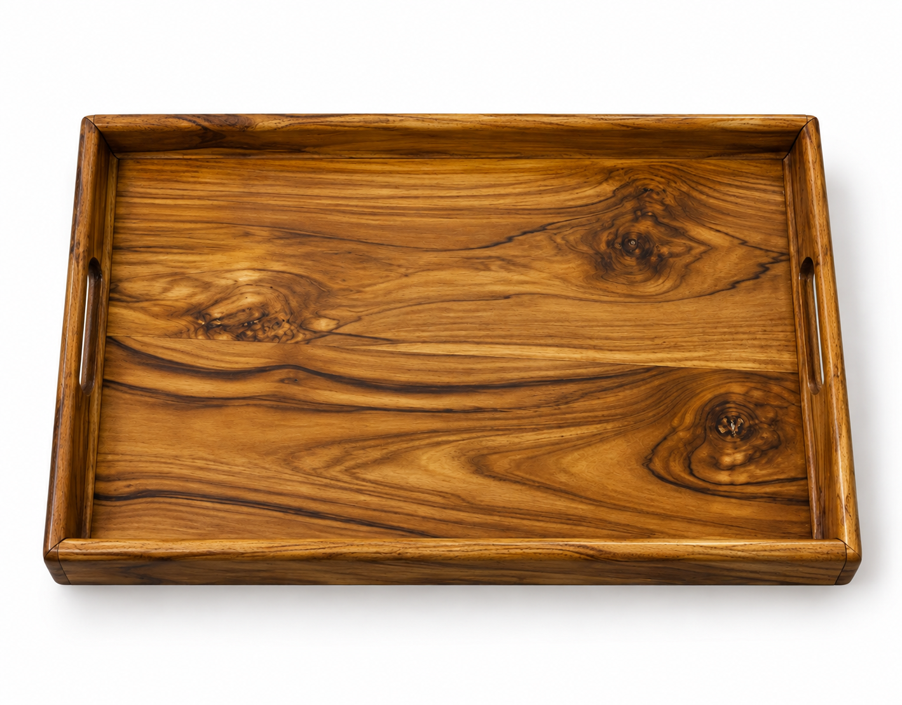

Piezas destacadas
Una muestra de lo que sale del taller — cada foto es la pieza real que llega a tu mesa.

Madera de machiche
Set de platos planos artesanales
6 platos tallados a mano, pulidos y sellados con aceite vegetal de grado alimenticio. Algunos conservan detalles de albura natural.
$2,100 MXN · $350 c/u

Madera de machiche
Set de platos pequeños
Bordes suaves y vetas irregulares, ideales para porciones individuales o botanas.
$1,440 MXN · $240 c/u

Madera de caoba
Plato botanero
Tono rojizo profundo, ideal para botanas, dips o postres.
$190 MXN c/u

Madera de dzalam
Plato plano mediano
Forma plana con bordes sutilmente curvados, ideal para presentaciones.
$300 MXN c/u

Madera de teka
Bandeja de desayuno
Bordes elevados, asas laterales, acabado brillante con barniz protector.
$1,300 MXN